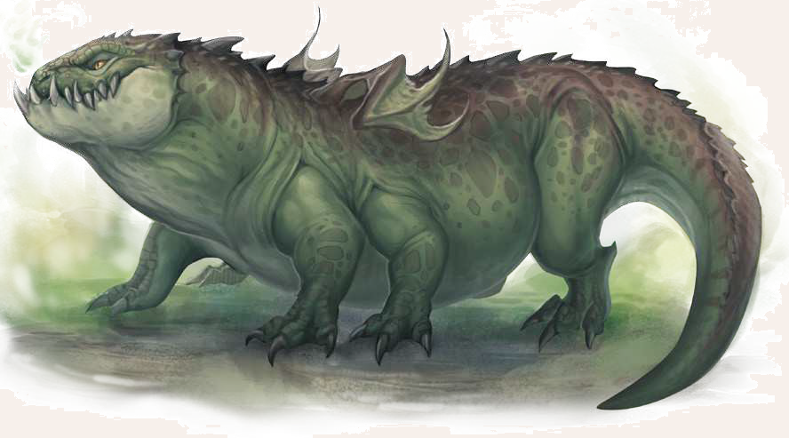

Drachen gibt es in Aventurien in unterschiedlichen Größen. Der Überlug eines Kaiserdrachen kann die Bevölkerung ganzer Landstriche in Angst und Schrecken versetzen. Der Tatzelwurm hingegen ist wahrlich nicht der stattlichste Vertreter des Drachengeschlechts. Die bis zu vier Schritt lange, lügellose Echse bewegt sich auf drei Beinpaaren fort. Die schuppige Haut, der lache Rückenkamm und das mit scharfen Zähnen bewehrte Maul wirken zwar durchaus drachentypisch, die tierische Intelligenz und die fehlenden magischen Fähigkeiten sind hingegen nicht dazu angetan, den Tatzelwurm seinen mächtigen Anverwandten zuzuordnen. Ferner bringt sein nur etwa 60 Grad heißes Blut statt einem Feuerschwall nur faulig stinkenden Atem hervor. Offene Flammen können die von ihm ausgespienen Gase jedoch durchaus entzünden. Sein sprichwörtlicher Gestank ist überdies das denkwürdigste Merkmal und sucht in Aventurien seinesgleichen. Wer einem Tatzelwurm zu nahe kommt, wird den niederhöllischen Fäulnisgeruchs erst nach zwei bis vier Wochen wieder los. Da helfen selbst ausgedehnte Bäder und die besten Duftwässerchen nur bedingt.
Verbreitung
Der Tatzelwurm ist in ganz Aventurien verbreitet und bewohnt vor allem Höhlen, Ruinen und dunkle Wälder.
Gebirgsregionen wie der Finsterkamm sind sein bevorzugter Lebensraum.
Lebensweise
Tatzelwürmer sind die meiste Zeit ihres Lebens Einzelgänger, einzig zur Paarung treffen sich zwei Exemplare.
Das Weibchen legt bis zu einem halben Dutzend Eier, die sie in ihrer Höhle mit ihrem eigenen Kot warm hält.
Die Jungtiere begleiten ihre Mutter, sobald sie groß genug dazu sind.
Daher trifft man Tatzelwürmer zwar meist einzeln an, doch im schlimmsten Falle mag man auch auf ein Muttertier mit halb ausgewachsenen Jungen treffen, die gemeinsam jagen.
Wie alle Drachen legt auch der Tatzelwurm Horte mit funkelnden Beutestücken an.
Er ist jedoch wenig wählerisch, sodass alles, was glitzert oder schimmert, seine Gier wecken kann.
Bereits eine einfache Gürtelschnalle kann darüber entscheiden, ob ein Tatzelwurm einen Wanderer anfällt oder ziehen lässt.
Da er jedoch weder besonders ortstreu ist, noch über ein lückenloses Gedächtnis verfügt, können die von ihm angelegten Horte zuweilen verlassen vorgefunden werden.
Wenngleich der Tatzelwurm ein wenig aggressiver Fleisch- und Aasfresser ist, sollte er im offenen Kampf aufgrund seiner schieren Größe, seines messerscharfen Gebisses und nicht zuletzt aufgrund seines Übelkeit erregenden Gestanks nicht unterschätzt werden.
Besonders in engen Höhlen gibt es kaum etwas Gefährlicheres, als von einem heimkehrenden Tatzelwurm überrascht zu werden.
Tatzenwurm
Größe: 1,00 bis 1,20 Schritt hoch; 1,50 bis 2,50 Schritt lang (ohne Schwanz); 3,00 bis 4,00 Schritt lang (mit Schwanz)
Gewicht: 400 bis 700 Stein
Eigenschaften:
MU 15
KL 09
IN 13
CH 08
FF 00
GE 12
KO 22
KK 28
LeP: 200
AsP: -
KaP: -
INI: 14+1W6
SK: 1
ZK: 7
GS: 5
VW: 6
Biss:
AT: 15
TP: 2W6+8
RW: kurz
Klauen:
AT: 15
TP: 1W6+6
RW: mittel
Schwanz:
AT: 13
TP: 1W6+4
RW: lang
RS/BE: 4/0
Aktionen: 2 (max.1 x Biss, max. 1 x Schwanz)
Vor- und Nachteile: Dunkelsicht I
Sonderfertigkeiten: Mächtiger Schlag (Klauen, Schwanz, bei erfolgreichem Angriff müssen Gegner der Größe mittel und kleiner eine Probe auf Kraftakt erschwert um 4 bestehen, sofern sie nicht ausgewichen sind; ansonsten erhalten sie den Status Liegend), Schildspalter (Biss, Klauen),
Schwanzschwung (Schwanz, gegen Ziele der Größenkategorie mittel und kleiner kann ein Schwanzangriff ausgeführt werden, der diese Ziele zu Fall bringt. Die Attacke ist um 2 pro Ziel erschwert. Gegen diesen Angriff kann man nur ausweichen. Ist die Verteidigung misslungen, stürzt der Gegner und erleidet den Status Liegend. Durch den Fall erleidet man 1W3 SP. Ein solcher Angriff kann nur gegen Ziele neben oder hinter dem Tatzelwurm ausgeführt werden.),
Wuchtschlag I (Biss, Klauen, Schwanz), Zu Fall bringen (Klauen, Schwanz).
Talente:
Klettern 1 (15/12/28),
Körperbeherrschung 4 (12/12/22),
Kraftakt 14 (22/28/28),
Schwimmen 1 (12/22/28),
Selbstbeherrschung 7 (15/15/22),
Sinnesschärfe 7 (9/13/13),
Verbergen 1 (15/13/12),
Einschüchtern 10 (15/13/8),
Willenskraft 12 (15/13/8)
Anzahl: 1 oder 2 (Paar, zur Paarung zusammengekommen; oder Mutter mit Jungtier)
Größenkategorie: groß
Typus: Drache, nicht humanoid
Kampfverhalten: Ein Tatzelwurm greift Eindringlinge in seinem Revier häuig aus dem Hinterhalt an. Er versucht zunächst, durch Schwanzschläge und Klauenhiebe seine Opfer zu Fall zu bringen, und beißt dann zu.
Flucht: Verlust von 75% der LeP
Beute: 250 Rationen (Fleisch, ungenießbar), Trophäe (Tatzelwurmkarfunkel, 1 Silbertaler), Tatzelwurmhort (Wert: 2W20 x 2W20 Silbertaler)
Sonderregeln: Übler Geruch: Sobald ein Held in der Nahkampfreichweite mittel oder nah mit dem Tatzelwurm kämpft, muss er sofort eine Probe auf Selbstbeherrschung (Handlungsfähigkeit bewahren) ablegen.
Bei Misslingen erhält der Held eine Stufe Verwirrung. Dabei ist es unerheblich, ob der Tatzelwurm den Helden in Nahkampfreichweite mittel oder nah angreift, oder der Held den Tatzelwurm auf dieser Distanz attackiert.
Die Zustandsstufen sind nicht kumulativ, der Held kann nicht mehrfach Verwirrung durch den Gestank erleiden.
Nach dem Kampf haftet der Gestank dem Helden noch immer an und er erhält den Status Übler Geruch.
Proben auf Gesellschaftstalente (außer Einschüchtern, Menschenkenntnis und Willenskraft) sind für 1W3+1 Wochen um zusätzlich 1 erschwert.
Der Geruch lässt sich nicht abwaschen, nur durch andere starke Gerüche wie Parfüm für eine Stunde überdecken.
| LeP-Verlust | Schmerz | |
|---|---|---|
| 150 LeP (¾) | +1 Schmerz | |
| 100 LeP (½) | +1 Schmerz | |
| 50 LeP (¼) | +1 Schmerz | |
| 5 LeP und weniger | +1 Schmerz |
| Tierkunde | (Ungeheuer) | |
|---|---|---|
| QS1 | Tatzelwürmer besitzen einen Hort, wo sie Gegenstände, die ihnen gefallen, verstecken. | |
| QS2 | Obwohl der Tatzelwurm mit den Drachen verwandt ist, besitzt er keinen Feuerodem. | |
| QS3 | Der Gestank des Tatzelwurms hält mehrere Wochen an. Einzig ein Gemisch aus Essig und Kokosmilch kann den Geruch für 2W6 Stunden aufheben. |